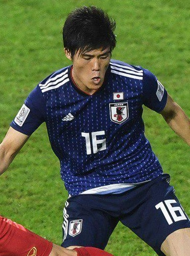
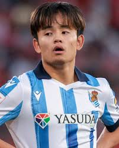

| Eiji Kawashima |
Portero |
41 |
Eiji Kawashima (Saitama, 20 de marzo de 1983) es portero histórico de Japón y actualmente juega en el Estrasburgo de Francia. |
 |
| Maya Yoshida |
Defensa |
36 |
Maya Yoshida (Nagasaki, 24 de agosto de 1988) es defensa central y ha jugado en clubes europeos como Southampton y Schalke 04. |
 |
| Takehiro Tomiyasu |
Defensa |
26 |
Takehiro Tomiyasu (Fukuoka, 5 de noviembre de 1998) es defensor del Arsenal de la Premier League e internacional con Japón. |
 |
| Daichi Kamada |
Mediocampista |
28 |
Daichi Kamada (Ehime, 5 de agosto de 1996) es mediocampista creativo, exjugador del Eintracht Frankfurt y actualmente en Lazio. |
 |
| Takefusa Kubo |
Delantero |
24 |
Takefusa Kubo (Kawasaki, 4 de junio de 2001) es extremo del Real Sociedad y considerado la joven estrella del fútbol japonés. |
 |